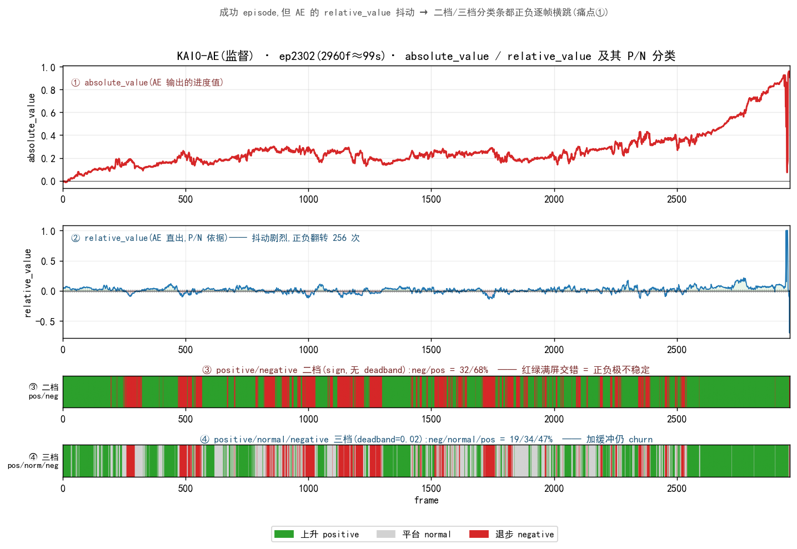
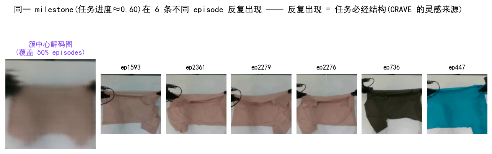
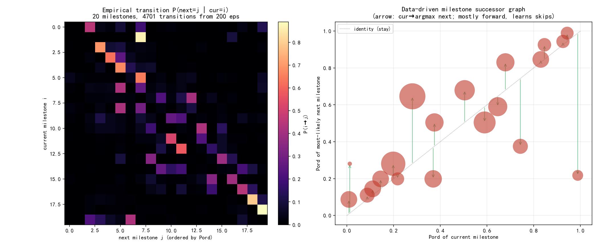
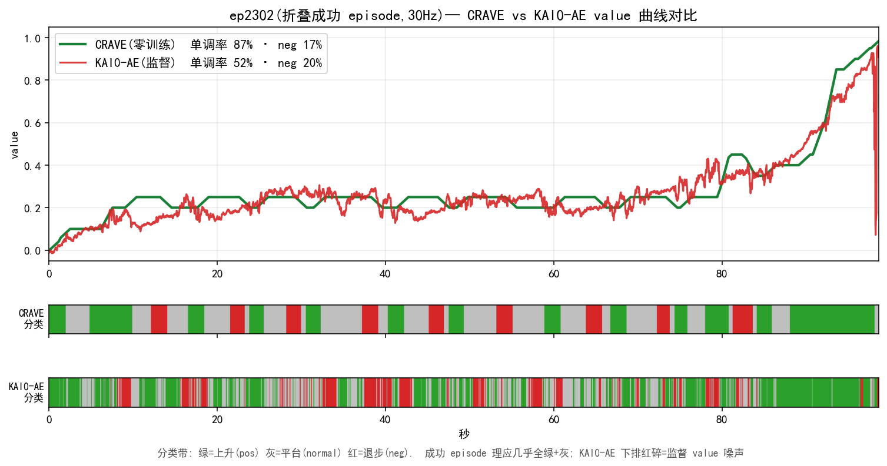
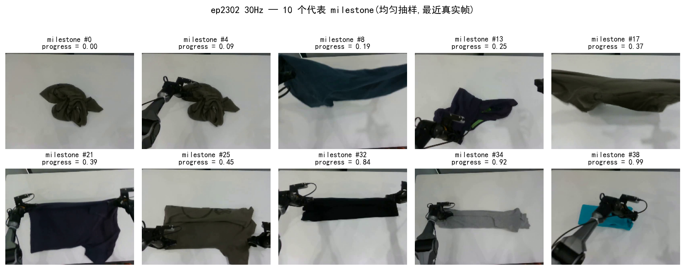
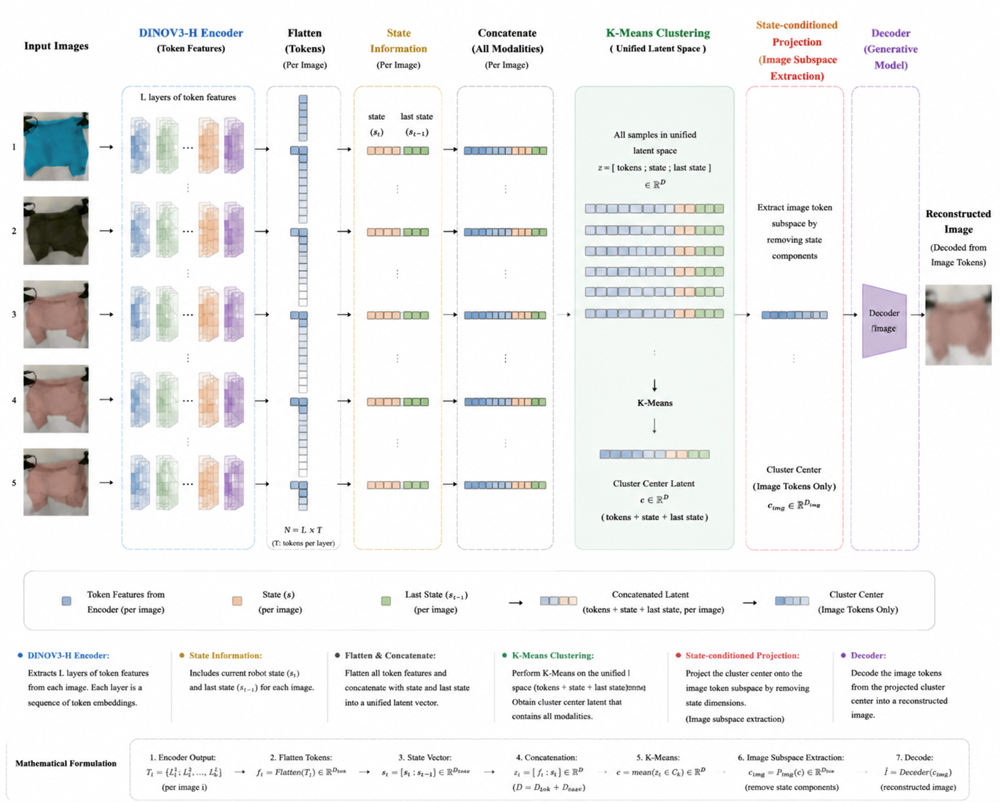
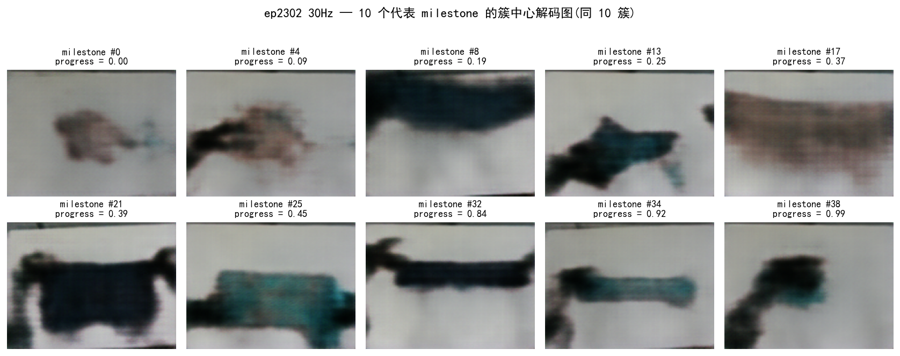
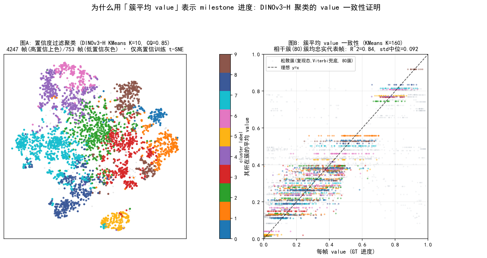
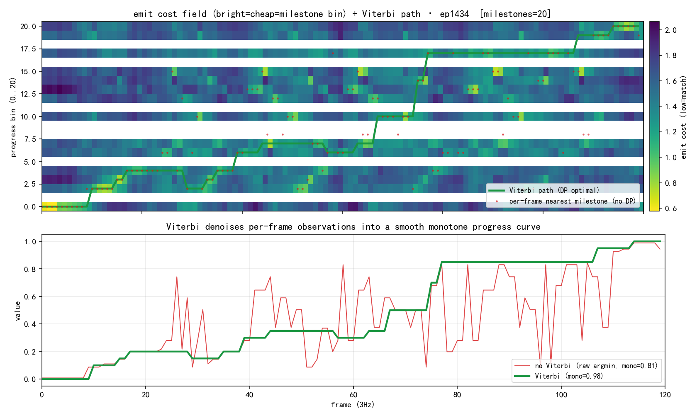

TL;DR关键结论
用监督模型一半的代价,拿到同等或更稳、还能跨任务直接复用的 value。
1现状:当前 value 模型的三大痛点
value 模型是干嘛的? AWBC / RL 训练需要每帧"任务完成到几成"的稠密信号,据此判每个动作是 POSITIVE(该学)还是 NEGATIVE(该避)。当前主流做法是监督训练一个 value 头。
KAI0-AE = 上述监督路线;PI 系(π*0.6-RECAP 等)用监督进度差 / RL 回报,流程类似。
监督 value 逐帧抖动,导致 AWBC 的正/负标签在同一段动作里来回横跳——学到的是噪声而非真信号。下图 kai0_base ep2302(成功叠衣)的 KAI0-AE 四联图:① absolute_value(进度值)→ ② relative_value(AE 直出、P/N 依据)在 0 附近剧烈抖动、正负翻转 256 次 → ③ 二档(pos/neg)分类条红绿满屏交错,④ 三档(加 deadband)仍 churn。同一段成功动作被反复标成 NEGATIVE = 纯噪声。

传统 value 在不少帧上升降缺乏可解释性。下面是几条较长 kai0_base episode的 KAI0-AE value + 分类条(绿 POS / 灰 NORMAL / 红 NEG),配相机帧——可直观看到"看不出凭什么升降"的片段。都是成功叠衣 episode,AE 却标 14–23% 为 NEGATIVE = 纯噪声:
注:P/N 分类按 AE 直出的 relative_value(与痛点① 一致),非 Δabsolute_value 差分。
根因:用相似度度量,折叠动作让画面外观骤变 → 与"已折叠"原型的相似度骤降 → value 假跌,折完才恢复(对折叠过程的相似度不鲁棒)。下面两段叠衣收尾实例直观可见 value 突然下跌 → 恢复:
2CRAVE 核心思想
2.0 痛点 → CRAVE 怎么解
| 痛点 | CRAVE 怎么解 |
|---|---|
| ① AE 抖动 → 正负交错 | milestone 阶梯 + Viterbi-DP 全局最优 → value 平滑单调,正负段化稀疏而非逐帧横跳 |
| ② 升降不可解释 | value = "在哪个反复出现的 milestone 簇上" → 每次升/降都能指着具体 milestone说清楚 |
| ③ 末端相似度假跌 | 不只看瞬时相似度:转移惩罚 + 簇间转移概率(知道"末段不会跳回起始态")→ 压住假跌 |
2.1 灵感来源:反复出现 = 任务必经结构
同一任务的众多 demo 里,关键 milestone 会在不同 episode 反复出现(抓取→摊开→对折→叠好)。把"跨 episode 的统计重复性"当作无标签的监督信号:反复出现的状态 = 任务必经 milestone。

2.2 三步直觉(全程零训练)
全链无梯度更新:DINOv3-H 冻结 + KMeans + DP,没有任何可学习参数被训练。
2.3 充分利用「簇间转移概率」(直接解痛点③)
从 demo 统计"当前 milestone 的下一个最可能是谁"的经验概率 P(next | cur),折进 DP:它知道"末段几乎不会跳回起始态",于是把相似度造成的末端假跌重罚压住。质量集中在对角线右上(单向前进 + 合法跳级),"中段→起始"近乎为 0。

P(next|cur):对角线右上为主(任务单向前进),"中段→起始"≈0 → 循环态 alias 被先验重罚。3效果对比(每条回扣痛点)
3.1 in-distribution(监督 AE 的主场)→ 解痛点①
同域(kai0)同数据公平对比,kai0_base 折叠成功 ep2302:零训练 CRAVE 与监督 AE 末值同到完成,但 CRAVE 更平滑、分类更干净 —— 单调率 87% vs 52%,POS/NORMAL/NEG 分类带 CRAVE 成块(绿/灰为主),AE 红碎噪声满布。

3.2 value 升降可解释 → 解痛点②
CRAVE 的每次升/降都对应明确的动作。下图 ep2302(0:06–1:17 段):铺开 → value 上升(POSITIVE)、拎起 → value 下降(NEGATIVE)、平稳保持 → NORMAL —— CRAVE 的升降与动作对齐整齐,主观一眼就能解释 value 为什么升/降。
3.3 跨数据集泛化(配方逐字不改)
同一冻结配方套全新数据集:XVLA 叠衣 corr 0.956、真实 ALOHA 咖啡 corr 0.988 —— 学的是"跨 demo 重复结构 = 进度"的通用规律,而非单数据集过拟合。下面两段为 CRAVE 在两个全新数据集上的逐帧 value + milestone 对齐演示:
4实现原理
4.1 milestone 自动浮现



4.2 为什么用「簇平均 value」当 milestone 进度(value 一致性)

4.3 value 读出三步:无 Viterbi → Viterbi → 转移概率
Viterbi：Viterbi 不是单帧独立决策,而是用固定滞后窗口看一小段局部上下文来约束当前帧的选择,相当于给当前帧配了前后几秒的"连续性约束"。单帧因光照/褶皱/角度突变导致的模型输出抖动,被窗口内的路径连贯性平滑掉。
转移概率：从大量 demo 中学到"任务只能往前推进",所以当某帧突然像起始态(折叠时画面骤变→相似度假跌),Viterbi 会说"末段跳到起始的概率极低",不会真的跟丢、value 不会随之暴跌。两条一起:原始逐帧乱跳 → 变成段落式的干净阶梯,每个 POSITIVE/NEGATIVE 都有前后文支撑,不再是横跳的噪声。
在线推理：用固定滞后 Viterbi实现:每来一帧,向前多看一小段(3Hz 下约 12 帧=4 秒),然后局部回溯判断当前帧——相当于有 4 秒的"合理缓冲",不需要等整条 episode 完结,就能在线输出稳定的 value。固定滞后窗口足够小,真机实时可用,实测与全局 DP 相关度 0.9+、末值差小于 0.03。

5优缺点、适用边界与选型
CRAVE 用"跨 episode 复现 + 簇间转移概率",零训练地把三个痛点逐一解掉——抖动→平滑段化、升降可解释、末端假跌被压住,且跨任务直接复用。
✅ 优点
- 零训练零标注 —— 省每任务重训与标注成本
- 可解释 —— 每帧能指着具体 milestone 说清升/降
- 跨数据集泛化 —— 配方不改套新本体/新任务
- 退步信号干净稀疏 —— OOD 上对齐真事件
- 平滑单调 —— 正负段化,不逐帧横跳
⚠️ 缺点 / 边界
- 依赖挖矿域与目标域对齐(挖矿数据要和评估任务同分布)
- 转移概率对正常走势是中性的——只在"同态/循环态假跌"上有用,且须轻权重;跳步检测不行
- milestone 空间形态下完成态读数偏低,需保留一个软 completion bias
- τ 略低于监督 AE(前段动作多样、排序略噪)
- 需要足够多的同任务 demo才能让"重复"显现
何时用 CRAVE / 何时用监督 AE
| 场景 | 选 CRAVE | 选监督 AE |
|---|---|---|
| 没有 GT/标注、想零成本起步 | ✅ | — |
| 新任务/新本体要快速复用 | ✅ 配方不改 | 需重训 |
| 真机 rollout 要干净退步信号 | ✅ 稀疏对齐 | 弥散 |
| 已有大量 GT、只求单数据集极致 MAE | 可选 | ✅ 主场 |
| 同任务 demo 很少(重复不显现) | ⚠️ 慎用 | ✅ |
6下一步计划：从描述 → 预测 → 决策
当前 CRAVE 还是一个"描述器"。下一步是从"看懂"到"能预测、能规划、能决策"——构建一个以 task-aware latent milestone 为核心的世界模型。
6.1 Latent Milestone 世界模型定位
现有世界模型在两个极端之间摇摆:
- Naive pixel-level:预测下一帧像素,绝大部分像素对任务无意义,计算浪费且不抽象;
- "Physical state" 声称(如 JEPA):声称学到了物理表征,但没有机制保障——模型可以"作弊"走捷径而不真正理解任务结构;
- 3D/point-based:深度噪声大、遮挡不稳定,且缺乏任务相关语义——它知道物体在哪,但不知道"这个状态在任务中意味着什么"。
CRAVE 提出的是一条中间路线:
- 视觉基座:DINOv3-H (隐含分割/深度) → 提供视觉语义
- 本体状态:28D 关节位置(加权 0.2)拼接 → 注入自身姿态感知
- 共现聚类:将"任务中反复按顺序出现的状态"归为 milestone → 注入任务语义
三者融合为一个 1308D 的联合 latent 特征空间 → latent milestone(任务阶段压缩表征)。
6.2 Recurrence State Graph (转移概率世界模型)
每个 milestone 本质是一个 task-stage latent state。 从 Viterbi 解码的大规模 episode 数据中,可以直接统计 P(s_{t+1} | s_t, a_t)——构成一个离散化的、有任务语义的世界模型。
这个图能做什么:
- 预测:给定当前 milestone,知道下一步最可能走向哪个 milestone——"手在衣领上→大概率下一步是抓领子"。
- 异常检测:当实际转移偏离高概率路径(如"刚叠好→回到第一步"),模型判定异常;
- 规划:从当前 milestone 到目标 milestone 的最优路径搜索;
- 数据驱动:低概率转移所在的帧→高信息量→指导在哪补数据。
6.3 AWBC + Process Reward (决策与在线优化)
有了 task-aware latent state 和转移图,下一步是让机器人能用这个模型做决策:
- AWBC 离线策略:milestone 天然的 state abstraction——在几十个有语义的状态上学习"当前阶段的最优动作",样本效率远高于像素级 RL;
- Process Reward:CRAVE 的 value(进度)本身就是稠密奖励信号——当实际进度落后于转移模型预期时,给出 negative reward,让策略在线调整;
- 闭环迭代:离线学→线上发现差距→收集新数据→改进策略。
6.4 与 π0.7 式 VLA 策略的天然互补: CRAVE 自动结构化 → π0.7 通用执行
π0.7 展示了强大的组合泛化与跨本体迁移能力,但其子任务边界需人工定义、子目标图像依赖 BAGEL 生成模型——新任务适配成本高。CRAVE 正好补上这两环,它本身就是为自动发现任务结构而设计的。两者的结合是非常自然的互补:
🔄 CRAVE 为 π0.7 提供的输入
- Milestone 关键帧 → 替代 BAGEL 子目标图像
自动从数据中挖掘每个任务阶段的关键帧,来自真实操作而非生成器幻想。 - Milestone 语义排序 → 子任务指令自动生成
按进度排序形成"先A再B后C"的任务链,直接作为 π0.7 的子任务文本指令。 - Value / advantage → 任务元数据(质量标签)
稠密 value 和 relative advantage 替代手工打标的 1-5 分质量评分。 - Recurrence State Graph → 规划先验
转移概率图告诉 π0.7"当前在 milestone 3,下一步 90% 概率进 4"。
🎯 结合后的能力
- 全自动流程:原始操作视频 → CRAVE 自动拆结构 → π0.7 通用执行
- 无需生成模型:milestone 来自真实数据,不需要 BAGEL
- 无手工标注:任务分几步、质量几分,全自动产出
- 快速适配新任务:采集操作数据 → CRAVE 挖结构 → 喂给 π0.7
简单说: CRAVE 是 π0.7 的结构化前端。π0.7 擅长"给定清晰任务结构后通用执行",CRAVE 擅长"从原始数据中自动发现任务结构"。两者结合,构成从原始数据到通用机器人执行的完整自动化 pipeline。
6.5 为什么要这样做
🎯 核心价值
- 非两端:CRAVE 的 latent state 既不是过细的像素,也不是无保障的"物理",而是任务语义中介——看得见、分得开、预测得了
- 全自动:从原始操作视频到世界模型,不需要人工标注/奖励设计/任务编程——数据驱动
- 可解释:milestone 对应可理解的任务阶段,转移图可审计——"为什么决策?因为模型预测有80%概率下一步是这个"
- 可迁移:视觉基座(DINOv3)和共现聚类机制跨本体跨场景复用
📅 时间线
- 已完成:CRAVE v2.4 多域 milestone 挖掘 + value 解码 + 跨域推理 ✓
- 2026 Q3:多模态融合 + Recurrence State Graph 首版
- 2026 Q4:AWBC 离线策略原型
- 2027 H1:Process Reward 在线闭环